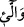

uyanları sünnetlerin ve yolların en açık ve net olanına sevkeder. Yolların ve sünnetlerin
en açığı dünyadan yüz çevirmek Allah Teâlâ’ya yönelmektir. İşte bu müttakilerin
makamıdır.
Sehl (rahimehullah) der ki: Kim bütün işlerini rabbine havâle ederse Allah onun her
iki dünyada da sıkıntılarını gidermeye yeter.
er-Rabî’ (r.h.) şöyle der: Allah Teâlâ kendi nefsine şu şekilde hüküm vermiştir. O
kendine tevekkül edene yeter, kendine îman edene hidâyet buyurur, kendisine borç
verene karşılığını verir, kendine güveneni kurtarır, duâ edenin duâsına icabet eder.
Bunun garantisi Yüce Allah’ın kitabındadır. Allah Teâlâ şöyle buyurur “Kim Allah’a
güvenirse O ona yeter”. (et-Talak, 65/3) “Kim Allah’a inanırsa Allah onun kalbini
doğru yola götürür.” (et-Teğabun, 64/11) “Verdiğinin kat kat fazlasını kendisine
ödemesi için Allah’a güzel bir borç verecek yok mu?” (el-Bakara, 2/245) “Her kim
Allah’a bağlanırsa kesinlikle doğru yola iletilmiştir.” (Âl-i İmran, 3/101) “Bana
duâ ettiği vakit duâ edenin dileğine karşılık veririm.” (el-Bakara, 2/186)
4. Kadınlarınız içinden âdetten kesilmiş olanlarla, âdet görmeyenler hususunda
tereddüd ederseniz, onların bekleme süresi üç aydır. Gebe olanların bekleme
süresi ise, yüklerini bırakmaları (doğum yapmaları)dır. Kim Allah’tan korkarsa,
Allah ona işinde bir kolaylık verir.
Zifafa girdiğiniz “kadınlarınız içinden” yaşları ilerlediği ve taravetlerini
kaybettikleri için “âdetten kesilmiş olanlarla” yaşları küçük olduğu için “âdet
görmeyenler
hususunda
tereddüd
ederseniz”
kuşkuya
kapılırsanız
yaşları
ilerlediğinden dolayı âdet kanamaları kesildiği için hükümlerini vermekte zorluğa
düşerseniz ve bekleme sürelerinin ne kadar olduğunu bilemezseniz “onların iddetleri
(bekleme süreleri) üç aydır.” Âyetteki “
/ellâî” kelimesi ism-i mevsûl olup “
/elletî” kelimesinin çoğuludur. Âlimler yaşı ilerlemekten dolayı âdetten kesilme yaşını
altmış veya ellibeş yaş olarak takdir etmişlerdir. Kadın bu yaştan sonra kanama görecek
olsa bu âdet kanaması sayılmaz. Âyet metninde yer alan “
/yeisne” kelimesi fiili
mâzidir. Arapçada “ye’s” ümid kesmek anlamınadır. Kelime bu anlamıyla
“reca/ummak” kelimesinin zıddıdır. Arapçada bu kelimenin “yeise min muradihi,
yeyesu, ye’sen” şeklinde kullanımı vardır. Aynı mânâya Arapçada “yeise, yeyesu,
ye’sen, iyasen, eysen” şeklinde bir başka fiil daha vardır. Bunların ismi fâilleri “yâis”
şeklinde değil de “âyis” şeklindedir. Arapçada “imraetün âyisun” denildiğinde âdet